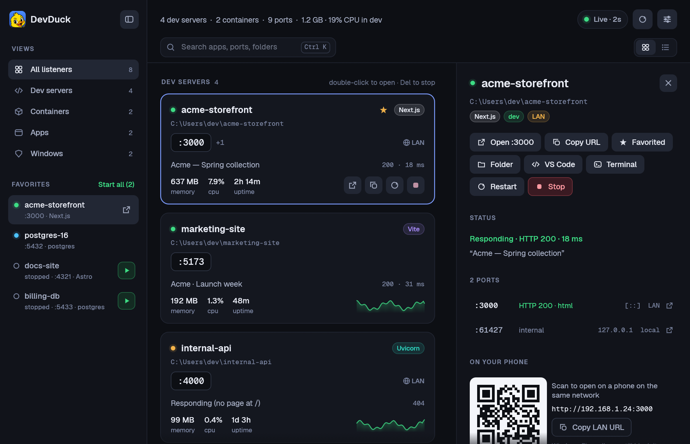
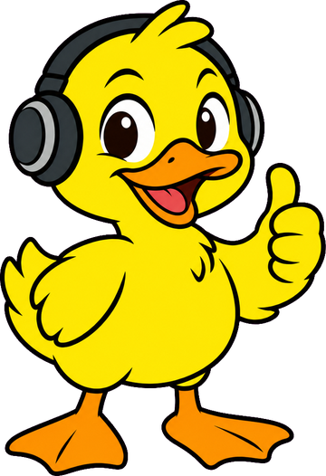

Grouped by project, not by PID
DevDuck walks each process tree past npm, vite, next, uvicorn and friends to find the project folder that owns a port, so five ports from one next dev show up as one card.
DevDuck shows what's listening on every port, grouped by project, and says what each one is. One click opens, restarts or stops the whole thing.

Demo data. Every card is a project; the drawer has its ports, process tree, command, logs and a QR code for your phone.
The problem
You have five projects, two databases and a Storybook running somewhere. netstat gives you a PID. Killing it leaves three orphaned node processes behind, and you still don't know which project it was.
> netstat -ano | findstr :3000
TCP 0.0.0.0:3000 LISTENING 30752
> taskkill /PID 30752 /F
SUCCESS: The process with PID 30752 has been terminated.
# ...and its workers keep running
> devduck who 3000 acme-storefront (Next.js) folder ~\acme-storefront tree 6 processes > devduck kill 3000 Stopped acme-storefront (6 processes); freed 3000
What it does
It refreshes every couple of seconds and works with whatever you already run: Next.js, Vite, Remotion, Astro, Storybook, Python, .NET or Docker.
DevDuck walks each process tree past npm, vite, next, uvicorn and friends to find the project folder that owns a port, so five ports from one next dev show up as one card.
Framework badge, the page's real <title>, HTTP status and response time, and which port is the web port.
No orphaned workers. The confirmation says exactly what will end, and Windows system processes are off-limits.
Restart re-runs the exact command in the same folder and captures its output, so the drawer can show you the logs.
Star a project or container and it stays in the sidebar even when it's stopped. Press ▶, or Start all to bring your whole stack up.
CPU and memory for the whole process tree, with sparklines. That's what stopping it would actually free.
See which servers your LAN can reach and scan a QR code to open one on your phone. If it's localhost-only, DevDuck tells you the flag to fix that.
Containers that publish ports get their own cards with image, uptime and docker logs. Stop, restart and start work too.
Open in the browser, copy the URL, or open the folder in VS Code, Cursor or a terminal.
Command line
devduck is a proper console program: it waits, prints, and returns exit codes your scripts can trust. Run it with no arguments to open the window.
| Command | What it does |
|---|---|
devduck | Open the window. |
devduck list | Every listener as a table. Add --json for bind addresses, framework, process count and working directory. |
devduck who 3000 | What's on a port: app, folder, process tree, command. |
devduck kill 3000 | Stop whatever owns a port: the whole tree, or docker stop. Refuses Windows system processes. |
devduck open 3000 | Open http://localhost:3000. |
Install
DevDuck builds from source with Rust. There's nothing to configure and you don't need admin rights.
Windows 10 or 11 with the MSVC Rust toolchain (1.88 or newer). If you don't have it, rustup sets it up in a few minutes.
The script builds a release, copies devduck.exe and devduck-app.exe to ~\.local\bin, and adds DevDuck to the Start menu.
git clone https://github.com/drhalto/devduck
cd devduck
.\scripts\install.ps1Start DevDuck from the Start menu, then right-click its taskbar icon and choose Pin to taskbar. Make sure ~\.local\bin is on your PATH to use devduck in a terminal.
| Ctrl K | Search apps, ports, folders, frameworks and page titles |
| ↑ ↓ | Move between servers |
| Enter | Open in the browser |
| Del | Stop the selected server |
| Ctrl B | Show or hide the sidebar |
| F5 | Refresh now |
Safety & privacy
DevDuck runs entirely on your machine. There's no account, no telemetry and no network calls beyond your own localhost.
GET / to each dev-server port when it appears, and again when you ask. It never probes databases, apps, containers or internal ports, and you can turn it off.%APPDATA%\DevDuck.
Rubber-duck debugging, but this duck actually knows what's on port 3000. It also beats calling the app "Port Listener Utility".